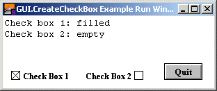

| GUI.CreateCheckBox[Full] | Part of GUI module |
| Syntax | GUI.CreateCheckBox (x, y : int, text : string, actionProc : procedure x (filled : boolean)) : int
GUI.CreateCheckBoxFull (x, y : int, text : string, | ||
| Description | Creates a check box (with accompanying text) and returns the check box's widget ID. The check box widget is used to implement a check box that can be set or unset. When you click on a check box, the status of the check box flips from set to unset and back again and the check box's action procedure is called with the new status as a parameter. If a check box is given a short cut, then entering the keystroke will cause the check box to change status and the action procedure to be called. The new status will be displayed immediately.
 The x and y parameters specify the lower-left corner of the check box (unless alignment is set to GUI.RIGHT, in which case they specify the lower-right corner of the check box). The text parameter specifies the text (or label) beside the check box. The actionProc parameter is the name of a procedure that is called when the status of the check box changes. The actionProcprocedure must have one boolean parameter which is the new status of the check box. In GUI.CreateCheckBox, the check box's text is always to the right of the actual check box. In GUI.CreateCheckBoxFull, the text can be set to the right or left of the check box with the alignment parameter. For GUI.CreateCheckBoxFull, the alignment parameter specifies the position of the check box in relation to the text as well as the meaning of the x and y parameters. The alignment parameter is one of 0, GUI.LEFT, or GUI.RIGHT. An alignment of 0 is the default and is the same as GUI.LEFT. GUI.LEFT means the actual box in the check box appears to the left of the check box's label and (x, y) specifies the lower-left corner. An alignment of GUI.RIGHT means that the actual box appears to the right of the check box's label and (x, y) specifies the lower-right corner of the check box. The shortcut parameter is the keystroke to be used as the button's shortcut. The default parameter is a boolean indicating whether the button should be the default button. If there is already a default button, and default is set to true, then this button becomes the new default button. A check box's size is not specified during creation. It is determined based on the size of the text. Instead the user specifies the lower-left corner of the check box (or the lower-right if the check box is right justified).
| ||
| Example | The following program creates two buttons, one which draws a random circle on the screen and one which quits the program
import GUI
procedure DoNothing (status : boolean)
end DoNothing
View.Set ("graphics:300;100,nobuttonbar")
var cb1 : int := GUI.CreateCheckBox (10, 10, "Check Box 1",
DoNothing)
var cb2 : int := GUI.CreateCheckBoxFull (200, 10, "Check Box 2",
DoNothing, GUI.RIGHT, '2')
GUI.SetCheckBox (cb2, true)
var quitBtn : int := GUI.CreateButton (230, 10, 0, "Quit", GUI.Quit)
loop
exit when GUI.ProcessEvent
end loop
var cb1Status : boolean := GUI.GetCheckBox (cb1)
var cb2Status : boolean := GUI.GetCheckBox (cb2)
if cb1Status then
put "Check box 1: filled"
else
put "Check box 1: empty"
end if
if cb2Status then
put "Check box 2: filled"
else
put "Check box 2: empty"
end if
| ||
| Execute | |||
| Details | When GUI.CreateButton or GUI.CreateButtonFull is called, the newly created check box will be displayed immediately unless GUI.DisplayWhenCreated has been called with the display parameter set to false. When a check box is not enabled, the label beside the check box is grayed out and the check box no longer responds to any mouse clicks or keystrokes until the check box is enabled again.
| ||
| Details | The following GUI subprograms can be called with a check box as the widgetID parameter:
| ||
| Status | Exported qualified. This means that you can only call the function by calling GUI.CreateCheckBox, not by calling CreateCheckBox.
| ||
| See also | GUI.SetLabel for changing the chec box's text and GUI.GetCheckBox and GUI.SetCheckBox for reading and setting the check box's state.
|